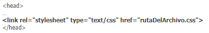

| Inicio | Conceptos | Recursos | Autoevaluación | Autor |
CSS EXTERNO
Aunque el CSS interno nos permite unificar en una declaración todos los estilos para un archivo html, seguimos teniendo el problema de tener que repetir la definición de estilos en la cabecera de cada uno de los archivos html de nuestro desarrollo web. Si el desarrollo tiene pocos archivos quizás sea menos problemático, pero cuando el desarrollo tiene cientos o miles de archivos sí se convierte en un verdadero problema, ya que cada vez que introdujéramos cambios habría que hacerlo en los cientos o miles de archivos de que constara el desarrollo.
Para solventar esta solución se ideó la declaración externa de CSS, basada en declarar los estilos CSS en un archivo independiente que puede servir como referente para dotar de estilos a decenas, cientos o miles de archivos html, que únicamente deberán invocar el nombre de archivo utilizando una sintaxis específica. De este modo un cambio en los estilos habrá que hacerlo únicamente en el archivo de estilos correspondiente, lo cual supone una gran ventaja. Incluso un cambio completo de los estilos de una página web se puede conseguir simplemente sustituyendo el archivo correspondiente.
Vamos a generar un archivo de estilos independiente. Para ello abre Notepad++ (o el editor de texto que estés usando) y crea un archivo con el siguiente contenido:
Seguimos usando las mismas propiedades CSS y los mismos valores que hemos usado en la forma CSS en línea y en la forma CSS interna.
Los contenidos que se encuentren entre los símbolos /* …. */ serán considerados comentarios y se pueden usar para introducir información del autor del archivo, versión, etc. así como para escribir aquellas aclaraciones sobre los estilos que se consideren necesarias. Un comentario puede comprender una o varias líneas según se desee.
Elige Guardar Como… y guarda el archivo con un nombre y extensión css, por ejemplo estilos.css. Asegúrate que la extensión del archivo sea css. No es válido si no tiene esta extensión.
En nuestro archivo HTML eliminaremos la definición de estilos interna y dejaremos sólo la invocación al archivo escrita con la siguiente sintaxis:

link es una etiqueta que se usa en HTML para establecer vínculos entre un documento HTML y otros recursos como una imagen de icono o una hoja de estilos CSS. En este caso se indica con la propiedad rel (relación o relationship) que el documento HTML debe usar los estilos definidos como texto/css en un archivo con el nombre indicado.
Ten en cuenta que si como ruta de archivo indicas simplemente el nombre del archivo, éste debe encontrarse en la misma carpeta en que se encuentre el documento HTML. Si el archivo CSS se encuentra en otra carpeta deberás indicarlo escribiendo una URL completa u bien una URL relativa que determine la ruta.
CSS INTERNO
Las diferentes propiedades y valores se pueden poner en una misma línea o en distintas líneas según se prefiera (siempre separados mediante punto y coma).
Dentro de las etiquetas head … /head incluiremos una etiqueta de apertura de declaración de estilos: style type=”text/css”, a continuación colocaremos la definición de tantos estilos como deseemos y cerraremos la declaración con /style.
En HTML 5 no es necesario especificar type =”text/css” pero de momento seguimos recomendando que se use esta sintaxis.
En nuestro código de ejemplo el cambio de los elementos del menú para que tengan el texto color verde y el icono o símbolo de viñeta de color rojo se haría de esta forma: